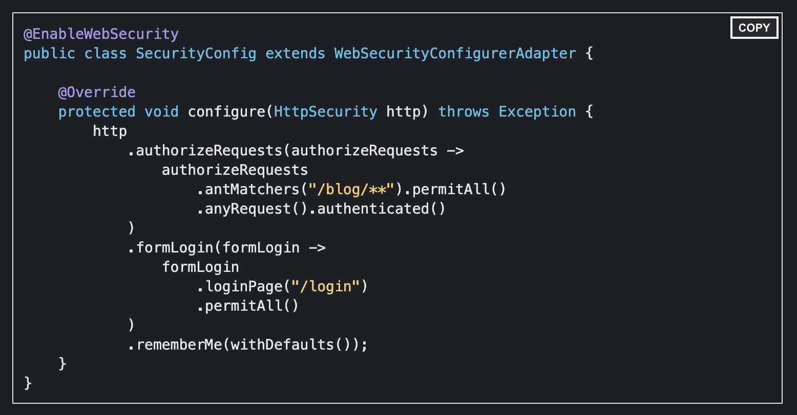

Programación de Aplicaciones Telemáticas
Tema 17: Seguridad
Agenda
Sessión 1
- Introduccion
- Mecanismos de Seguridad
- Autenticación y Autorización
- Cabeceras HTTP orientadas a la seguridad
- Spring Framework
- Enterprise Security
Sessión 1
Introduccion
La Seguridad Web son las medidas aplicadas para proteger una página web y garantizar que los datos no están expuestos.
Es un proceso continuo y esencial en el desarrollo de aplicaciones.
Los principales ataques que puede sufrir una aplicación Web son:
- Robo de Información
- Suplantación de identidad
- Recibir ataques DDoS
- Mostrar información no deseada
La seguridad en el desarrollo de aplicaciones se puede gestionar utilizando las siguientes opciones:
- Framework de desarrollo (Spring Security)
- Securización de APIs (API Management)
- Firewall (Software y Hardware)
Mecanismos de Seguridad
Los mecanismos de seguridad más utilizados en el desarrollo de aplicaciones Web son:
- WWW-Authenticate
- OAuth 2.0
- OpenID
- JSON Web Token (JWT)
WWW-Authenticate
El marco de autenticación HTTP que puede ser usado por un servidor para revisar la solicitud de un cliente y por un cliente para proveer información de autenticación.
El servidor responde al cliente con un estado de respuesta 401 (Unauthorized) y devuelve al cliente información sobre cómo autorizarse con un encabezado de respuesta WWW-Authenticate que contiene al menos una revisión.

OAuth 2.0
Es un estándar abierto para la autorización de APIs, que nos permite compartir información entre sitios sin tener que compartir la identidad.
Proporciona diferentes flujos de autenticación:
- Client Credentials
- Password
- Authorization Code
- Implicit flow
OpenID
Estándar de identificación digital descentralizado, con el que un usuario puede identificarse en una página web a través de una URL y puede ser verificado por cualquier servidor que soporte el protocolo.
Los usuarios no tienen que crearse una nueva cuenta de usuario para obtener acceso. En su lugar, solo necesitan disponer de un identificador creado en un servidor que verifique OpenID, llamado proveedor de identidad o IdP.
JSON Web Token (JWT)
Es un estándar qué está dentro del documento RFC 7519.
En el mismo se define un mecanismo para poder propagar entre dos partes, y de forma segura, la identidad de un determinado usuario, además con una serie de claims o privilegios.
Estos privilegios están codificados en objetos de tipo JSON, que se incrustan dentro de del payload o cuerpo de un mensaje que va firmado digitalmente.

Autorización y Autenticación
Autorización: Define a qué recursos de sistema el usuario autenticado podrá acceder. Que haya logrado pasar la instancia de la autenticación, no significa que podrá utilizar el sistema por completo como super administrador.
Autenticación: Verifica la identidad del usuario, por diferentes métodos (algo que sabemos, algo que tenemos, algo que somos)
Cabeceras HTTP orientadas a la seguridad
Las cabeceras HTTP más utilizadas en la seguridad Web son:
- Authorization: Token de acceso al recurso gestionado por una API
- Strict Transport Security: La pagina sólo se cargará mediante HTTPS
- X-Frame-Options: Evitamos que nuestra web sea cargada como un iframe en otra Web
- X-XSS-Protection: Ayuda en la defensa frente a ataques de tipo Cross-Site Scripting (XSS)
- X-Content-Type-Options: Evitar ataques basados en la confusión del tipo de MIME
- Content-Security-Policy: Indicar al navegador qué contenidos dinámicos de terceros se permiten cargar
- Referrer Policy: Controlar que información se envía en la cabecera Referer que es utilizada por el navegador para indicarle al servidor desde que enlace se ha llegado a la página
Spring Framework
La solución que proporciona Spring Framework para seguridad es Spring Security.
Los módulos que analizaremos en el curso serán:
- Configuración
- Filtros
- DSL de Seguridad (Lambda DSL)
Configuración
- Incluir dependencias Maven (pom.xml)
- Crear WebInitializer para registrar Servlets y Filtros
- Crear Controladores (Web Controllers)
- Crear un fichero de configuración de Spring que registre un ViewResolver
- Crear ficheros JSP con la información de las vistas
- Definir las url protegidas de acceso y el cual tenemos referenciado desde el fichero de configuración principal con @import. (@EnableWebSecurity)
Filtros

Lambda DSL
Lambda DSL
- No es necesario utilizar el metodo .and()
- withDefaults() habilita la funcionalidad de seguridad por defecto. Un acceso directo mediante lambda sería it -> {}
- La configuración es más facil de comprender por otro miembro del equipo
- Spring Security DSL es similar a otros compomentes de Spring DSLs (Ej. Spring Integration)
Enterprise Security
API Manager
Pieza de software cuyo objetivo es crear, publicar y gestionar todos los aspectos relativos a APIs (interfaces de acceso a nuestros recursos o servicios) y su ciclo de vida.
Los API Manager más conocidos del mercado son:
- Apigee
- WSO2
- Azure API Manager
- Mulesoft
Balanceadores (F5)
Herramienta que permite que el sitio web/aplicación web que administremos esté siempre disponible, y sea capaz de servir todas las peticiones a la máxima velocidad posible.
Los Balanceadores pueden ser Hardware o Software.
Las soluciones más conocidas del mercado son:
- F5 (Hardware)
- HA Proxy (Software)
- AWS Load Balancer (SaaS)
- Azure Load Balancer (SaaS)
Gestión de Acceso e Identidades (IAM vs IDP)
La gestión de identidad y acceso (IAM) es un modo de saber quién es un usuario y qué tiene permiso para hacer. IAM es como el portero de una discoteca con una lista de quién puede entrar, quién no y quién puede acceder a la zona VIP.
Proveedor de identidad (IdP) es un producto o servicio que ayuda a gestionar la identidad. Un IdP gestiona el proceso de inicio de sesión (Ej Single Sign On).